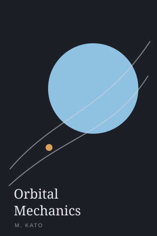
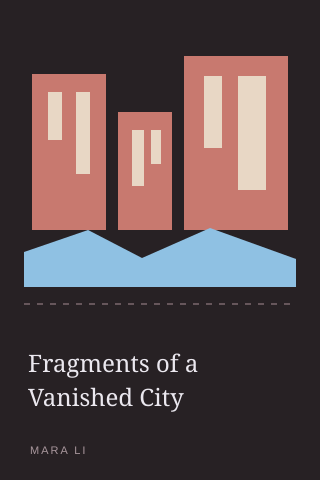

42%Local-first EPUB library and reader
Your EPUB library, organized and read on your terms.
Archeion turns the EPUBs on your Windows PC into an organized library and focused reader. Your books stay as normal files, with no account, cloud service, or telemetry.
Library
Your collection, organized around how you read.
Your collection
Library
9 books
15%
The Quiet ArchiveElena Voss
68%
Signal and DustH. Sato
28%
The Silent ObservatoryRin Aster
54%
Notes from the Outer RelayJonas Vale
Cover missing
100%

Manage the collection directly
- Add EPUBs or drop them into the active archive
- Create, rename, move, and delete books and folders
- Select multiple books for bulk library actions
Fix metadata without leaving the Library
- Edit EPUB metadata, including Series information
- Replace embedded covers or regenerate cached cover art
- Re-extract metadata when the source EPUB changes
Reader
Read your way, then return to the exact place.
Signal and Dust · Chapter Twelve
By the time the signal crossed the station network, Mara had already stopped listening for a reply. The station had taught her that silence was not the absence of information. It was a shape, a pressure, a thing with weight.
Outside the glass, the catalogue lights moved in strict intervals. Each pulse marked a volume returned to its place, a record made legible again.
Nothing was lost. It had only been waiting for an index.
The console warmed beneath her hands. One more book was ready to be read.
Select a passage to highlight it
68% · 214 / 315
02
Reading controls that follow the book
- Switch between paged and continuous reading without losing your place
- Resume saved progress and navigate by contents, chapter, or page
- Highlight passages, attach notes, and Define text with installed dictionaries
- Adjust appearance and continue to the next Series volume after completion
Local-first
Your EPUBs stay as normal files.
Archeion keeps the archive understandable outside the app. Books and real folders remain yours to open, copy, move, and back up with ordinary filesystem tools.
Back up together
Portable archive
Your Archive/
Book.epub
Normal EPUB file
Light novels/Volume 01.epub
Real folder and file
.archeion/
Archive-owned supporting data
- annotations.json, library.json, progress.json
- cover and scanner cache data
- recovery and retained EPUB writeback backups
Stored separately
Archeion application data
Application-wide resources belong to Archeion itself rather than to any one EPUB archive.
- Application-wide preferences
- Installed dictionaries
- Custom theme packages
Back up the complete archive, including .archeion/, to keep its books,
archive metadata, and recovery data together.
- No account
- No cloud sync
- No telemetry
More of Archeion
Useful tools, kept out of the way.
Quick Actions
Reach common Library and Reader commands from the keyboard.
Standalone utility windows
Keep Settings, Theme Manager, and About open independently of the Library.
Get Started
Start with the EPUBs you already have.
Download Archeion for Windows, then open an existing EPUB folder or create a new archive.
Build from source Developer
Source setup is for contributors and developers. The Windows installer above is the recommended path for normal use.
git clone https://github.com/TommyMoonn/archeion.git
cd archeion
npm install
npm run tauri:dev